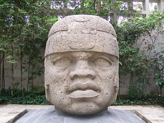
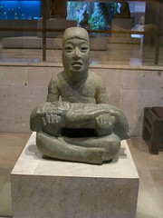
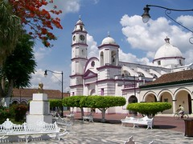
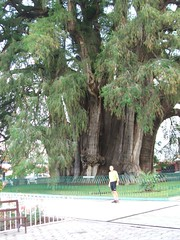
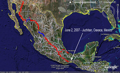
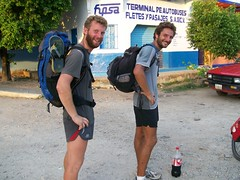
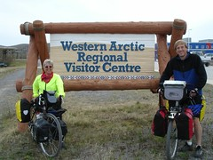

Mexico Blog (In Order)
Feel free to email .
The Pass of Cortes Has Been Renamed!
Donde estamos - 16 Mayo 2007
En la semana pasada Nancy hizo un vuelo a Las Vegas, Nevada, Estados Unidos para una reunión con su familia, y se hace muy felíz verlos. Durante la semana Randy hizo un recorrido de Cholula a Xalapa, Veracruz, Veracruz, y a Tlacotalpan, una ciudad muy pequeña pero bonita en el sur del estado de Veracruz.
Mañana pensamos empezar el camino a Oaxaca, que debe durar mas or menos una semana.
Hay muchas fotos nuevas en la página de fotos o puedes verlos diréctamente en Flickr:
Randy's Trip to the Coast

So I had to ride for the week on my own. Since our plan was to miss the Veracruz coast, I decided to make a trip to Xalapa, Veracruz, and Tlacotalpan, all on the Gulf Coast, all beautiful places.

Las Limas Olmec jade carving
Next I went to Veracruz, Mexico's most famous port city (and now an amazing tourist city too). It was just full of tourists, but it was really pleasant, nicely set up, beautiful weather. A bit hot, but plenty tolerable.

Church and plaza in Tlacotalpan
We're now riding through the rugged mountains of Oaxaca state. Lots of climbing. More on that later.
Gloria Hernandez: An interview with an entrepreneur
One part of the "Kiva Fellow" application calls for us to interview an small-business entrepreneur concerning their business and write a journal entry regarding it. Here's our interview with Gloria Hernandez Torres, who we met selling "molotes" at the door to the market in Cholula, Puebla, Mexico.
Gloria Hernándes Torres (56) has been selling molotes (a fried empanada of vegetables, cucumbers, cheese, and spices) in the same place in front of the market in Cholula for 33 years. Her niece Dulce (30) has been helping her with cooking and sales for the past year. She shares the sales spot and the business with her sister - Gloria does it two days per week, and her sister prepares and sells molotes three days per week.
The molotes sell for 9 pesos (about USD $0.81) each; the two seemed to be doing a brisk business at their little corner outside the market. Their profit varies from day to day, but they do not track it.
Gloria has been occupying this exact place outside the market for 33 years and is quite happy with what she's doing. She's not at all interested in changing or growing her business.
Video: Traditional Wedding Procession in Oaxaca
We were just visiting museums today, and were near the beautiful Santo Domingo church here in Oaxaca, Mexico, and we saw a lot of preparations... for something. It turned out that a wedding was concluding and the procession was getting ready. And we got to see (and follow) the most wonderful wedding procession, complete with dancers and "marmotas" (the huge dancing dolls you'll see in the video.)
One of the things we really like about Mexico is how celebrations are shared with the public. At home, a wedding is just for the people invited to it, but here, they make a way for everybody to partake of at least some of it. Even we got to follow the dancers through the streets of Oaxaca.
A Day's Ride out of Oaxaca City

Huge tree at El Tule, Oaxaca
Second stop was the village of renowned weavings, Teotitlan. We stop by several shops and did get a couple of impressive demonstrations I saw a rug being woven for a doctor in Oaxaca which was huge, 9 feet by 20 feet and will take a month to weave at "Casa Santigago". I stopped by another old master weaver, Irene Jimenez Lazo and her family. Wonderful smaller rugs for around $70 dollars. If you get there her house and workshop is behind the main church. The church was built on an Aztec pyramid and some of the walls use the curved blocks from the old temple. We visited the artesian market next to the church. It is frustrating to see such wonderful craftsmanship and not be able to buy a thing. Both for me and the poor weaver. You can read about the weavers here. I bought a woven change purse for a dollar.
Just 5 miles down the rode we saw another amazing site that we would only see in Mexico. A mezcal distillery owned and operated by master Francisco Mateo Escobar. As we were riding down the rode we saw a group of men cutting up a huge centers of agave plants. We went over to investigate and ended up having a private tour of how mezcal (a kind of hard liquor) is produced: The three foot diameter pineapple of the agave plant is cut up, roasted in a deep pit, ground by a horse drawn stone into hair-like fibers which will be fermented in a huge wooden barrel, then cooked in a copper distiller. When it is close to perfection and 120 proof and the good stuff when poured bubbles will have white pearly bubbles floating on top.
We tasted the mezcal at different stages of development and then had a tasting sessions of nearly most of the 20 varieties of bottled Mezcal. Yum! Well, after that we rode to the closest town, carefully. Had lunch at 4:00 in the afternoon, found a hotel.and had a nice long nap. Bike touring is wonderful!
Down into the Tomb! Cerro de la Campana
A few questions and we found that we had to ride up a steep hill to get to the tomb. So we did. Then a few more questions and we found we had to hike up a much longer steep hill to get to the tomb. So we found a friend to watch the bikes and started up. It turned out to be a pretty good distance.
Finally up at the top was a well-preserved pyramid, which we enjoyed, but is no big deal for this area. There was nobody else at the site, except two caretakers near a covered area with a set of doors. This must be the "tomb". They explained that the tomb was closed to the public. However, a little bit into the conversation, it turned out that US$10.00 or so could open the tomb to the public, and the doors opened up and we walked down a rickety wooden staircase into a beautiful Zapotec tomb dating from about 500 A.D.
We had to lay on the floor and use flashlights to look through the barred doors and see the paintings and reliefs on the wall, and look into the tomb. It was amazing - there were paintings in red, white, and green, not just the usual little bit of red. And amazing reliefs on the wall. It was amazing to get a private little view into an ancient tomb.
We then walked back and rode into town, where the community museum was unlike anything we've ever seen in a small-town museum. You know how most little museums are - all the stuff that grandpa couldn't get rid of and the kids donated to the museum, stuck into cases. Well, not this one! It had two sides, one devoted to the tomb (with pictures that showed what it looked like when you weren't laying on the floor with a flashlight) and the other side devoted to that particular village's governance, daily life, and festivals. Wow, do I want to be there for their July 23-26 festival some year! They had glorious color photographs and excellent exposition of them all (in Spanish only). It might have been one of the few little museums we've ever been so happy to visit.
Mexican Billboards
A Very Organized Community
We saw clean highways, trash receptacles everywhere, and signs reminding everyone of their civic duty. This sign says "Take care of nature - don't throw trash. Health is LIfe." I can tell you we've seen some very trashed communities and highways at times in Mexico, and it was so amazing that this region had taken it in mind to put an end to this.
They also told us they have a community highway trash pickup every two months! We were impressed.
A Quiet Day's Ride In the Oaxacan Mountains
The early morning is a great time to ride because of the muted morning colors that fill the surrounding landscape, This morning was especially wonderful because the red-colored soil that stretched all around us was lit up doubly with the rising morning sun. A mist hung above the rich farm lands as we rode the quite river valley road. This moment of bliss was interrupted as the awakening sun heating the morning mist and us with it.
At 10 miles out we stopped for breakfast of quesadillas and sandwiches called tortas. As we waited for breakfast, I adjusted my seat for today’s ride. Yesterday's ride of 4500 feet climb stressed my soft tissue so an adjustment was called for.
We rode almost all day along a ridge line, deep valleys to the left and massive valleys to the right. We would climb 500 feet and descend 400 feet, and repeat this over and over. Climbing and descending. All and all we climbed over 3600 feet for the days total. I was in awe, how a road can be built along a ridge for 40 miles and have view on the left and right. It was an incredible bike ride with the beautiful vistas of tropical Oaxacan plants scattered throughout the expansive terracotta-colored landscape, but at the same time it is the dry season, and the land waits patiently for the rain to come in earnest.
As I rode the long miles, I kept myself entertained by looking around at the sights which are so foreign to me yet spike my curiosity. Who lives in the Adobe brick houses with tin roofs which stood on every distant hill top? What was life like for lone Mixtec Indian who worked hunched over his plot of land, and woman hunched over the concrete basins washing the endless piles of clothes, or preparing the days food? Why was the goats and mules making those awful sounds of protest? I let my mind wander for most of the time except when traffic approached or the road side DOG gave chase to me in which I focus on patterns of approach and the need for evasive action. Cars are mostly predictable, but not always. If I see a single car, it can go around me. If there are a bunch of big vehicles such as buses or large trucks, I avoid them and get off the road.
Dogs are another thing all together. They are unpredictable. Some will just ignore us. Some will do their duty and bark at us. Some will put up a good show and chase us but will back off when we speak out load. GOOD MORNING PERRO! But some need their daily exercise and will chase us. Randy often rides ahead of me which stirs them up and they are ready by the time I come along. He tells them to go get me and leave him alone. I often see this dynamics from a distance and see how the dogs go after him and they will either chase him or back down. I am ready with my greeting or water bottle if needed. I greet them first and if this does not stop them I squirt my water bottle at them. Nothing stops a dog in the middle of a chase faster then a squirt of water in the face or if they are really persistent it will take two squirts to deter them. Today I got chased by dogs 3 times. One was by three dogs and another was a 5 dogs chase and another was a single dog. The greeting worked once for the single dog and the waterbottle trick worked on the multiple dog chase. I am glad that the dogs in Mexico are so submissive.
We stopped a couple of times along the road for a snack of baked goods, sodas, juices and fruits. Lucy Miscellaneous was a great stop along the ridge top. What I noticed about Lucy was she was old, curious and had 20 years of picture calendars pasted to her store walls. This was a nice stop offering us a half hour rest out of the sun and a few minutes into her life. The next stop was another 2 hours away at a top of the mountains. Five local fellows of Mixtec origin rested under the canopy of the road side fruit stand. We stopped for some fruit and a coke. Half of the gentlemen did not speak Spanish but spoke the native tongue of the Mixtec which they were to shy to share a word of when we asked how to say hello. The midde lady behind the counter spoke Spanish as well as one other gentleman. After they asked about our journey and we told them we had traveled from Canada in the last 9 monthsand rode eleven thousand kilometers, there was silence, complete silence for the next 15 minutes. Nobody moved, nobody talked, we all sat on the plastic chairs crowded under the small metal awning hiding from the afternoon high elevation sun, in silence. Um! We finished our snacks, said good-bye and rode another 5 kilometers to a rest area and had a couple hour nap on a concrete picnic table.
Upon awakening we could not figure out what we wanted to do. Go on or stay here for the night. It was four in the afternoon and still early but we had rode 5 hours and climbed 3500 feet and we where tired. We decided to ride on until we could re-supply our water and food and stop for the night when the place to spend the night presented itself. We never did find a place to camp until we reached the town of Telixtlanahuaca, Oaxaca were we found a hotel for the night.
As I soared down the mountains of Oaxaca, something special happened which reminded me of why I am doing this grand adventure. A hawk was gliding along the ridge top with me, paralleling me around 30 feet to the right, lifted in the air by the currents of the mountains. Our movement were synchronized. When the road curved to right, the hawked drifted to the right, when the road veered left and up, the bird flew left and up, as my speed increased or decreased the birds movements shadowed mine or mine hers. I felt like a bird. I was free. I was flying. I had worked all day long to be able to glide down the incredible mountains of Oaxaca along with my friend the hawk. I was a hawk and she was me.
All my questions and concerns I had in the early morning were answered by the time I rested my head on the hotel pillow that night. It was a good days ride and my head was full of the sights, sounds, senses upon my skin and my body was tired and ready to rest so we could do it again tomorrow.
Where we are - Early June, 2007

Well, it's early June, and we're (finally) in the south of Mexico, in the bottom of the southern state of Oaxaca (wah-HAH-kah). We've been in Mexico for almost four full months and have come about 2500 miles (4100 km). That's a lot slower than we expected - we thought we'd cover all of Mexico in about three months, and here we're still riding after four. But we've had an absolutely wonderful time, and we will miss Mexico dearly when we leave it. How are we going to live without all that incredible variety of outstanding food?
There are new pictures on the photos page - or you can go to this direct link..
Donde Estamos - 1 de Junio, 2007
Hay fotos nuevos en la página de fotos- o puedes cliquear aquí para aceso directo.
French Pan-Am Runners Matthieu and Ludo

There we were in the remote mountains south of Oaxaca, grinding up a big climb, and here comes Ludo, obviously a gringo, happily and easily running up the grade with a 20 pound backpack, making better time than we were. We stopped to chat, and it turned out that Ludo and Matthieu are running from Mexico City all the way to Patagonia! And they're planning only 10 months for the trip. They know that that's not enough time and they will be taking some buses on some sections, but they're making pretty fine time!
We were tremendously impressed with how light they are traveling, especially when compared with all the stuff we're hauling up and down the mountains. They have just one small day-pack each, containing one change of clothes and a sleeping bag. They put us to shame. And we met them again 2-3 days later on the coast of the Isthmus, so they're moving at almost the same speed as we are. (We do take more rest days.) Of course they're younger, but that's no excuse. We spent one evening with them and another mealtime before parting ways - we rode up into the mountains toward San Cristobal, and they continued on down the coast toward Guatemala.
You can follow their website at panandina.canalblog.com.
Our first year on the road! Today's our anniversary

Today is June 9, 2007. One year ago and 7600 miles ago we started out from Inuvik, in far, far northwestern Canada, on our journey to the bottom of South America. We didn't know whether we'd be successful in crossing that first 500 miles of dirt road in the tundra of the far north. And now here we are in the mountains at the very bottom of Mexico. We passed through Canada's Yukon, part of Alaska, British Columbia, the states of Washington, Oregon, and California, then went home to Denver to sell our house and get our affairs in order. In late January we set out again from Phoenix, Arizona, and have traversed the entire center of Mexico. What an incredible journey! But what will come next? We're hoping to do some volunteer work in Guatemala, and we may spend several months there, setting out again in the late fall.
We hope to get to the bottom of South America - Ushuaia, Patagonia, Argentina, in February of 2009.
Highways and Traffic and Bicycling in Mexico
First of all, our biggest risk here is the same as the biggest risk has been from Canada on down. It's getting wiped out by traffic. We're out there on the side of the road every day and we're vulnerable. One sleepy driver can swerve to the right just a little bit and we're history. We know it happens, and so do you. We have two main strategies here. We try to find the less-traveled roads using the best maps and information we can come up with, and we use mirrors on our helmets.
First, we try to find the less-traveled roads. It doesn't matter too much how wide the road is if there's nobody on it. So we've had a number of delightful roads this way. (However, there have been fewer of these for us south of Puebla due to the mountainous nature of the terrain - many times there's only one way to get from one place to another.) We use the excellent Guia Roji map set and look for the "yellow roads", the paved secondary roads, whenever we can. And we ask about the road and options ahead all the time.
Second, we try to know everything that's going on behind us. Our "Bike Peddler" mirrors that mount on helmet or eyeglasses let us scan for everything in back of us and we can see everything head of us. Basically, we try to anticipate every traffic situation and discretion is the better part of valor.
Most of the roads we've been riding on for the last month are two-lane, windy mountain roads, with no shoulder and moderate traffic. If there's a semi-truck in the oncoming lane, and a bus coming up behind us, we just get off the road. If it's a car coming up from behind, maybe we'll just hug the edge and let them work their way by - they have better brakes anyway. The good thing is that windy mountain roads mean slower traffic, and they can see us from a far distance they have more time to avoid us We also we can hear them coming most of the time which gives us more time to access the conditions.
We feel like we've gotten quite good at what we call the "dance". In the US and Canada, it seems that everybody just learns that driving is "staying between the lines." So when we're riding on the highway, they think they can come as close to us as they want to as long as they're "in their lane." But mostly we don't see that in Mexico - here they're used to obstacles and slow vehicles and animals on the road, and they do their best to anticipate and resolve these issues. We respect the Mexican drivers, and the vast majority of them have shown respect for us. We respect the truckers need not to stop behind us on a steep hill, and they seem to have done their best not to kill us. I won't say that this is a place for amateur riders, or that anybody would be as comfortable as we now seem to be. No shoulder and too much traffic is not optimal for bicyclists. But we're pretty amazed - we can handle a variety of road traffic, and can handle it without overdosing on adrenaline.
Security and Safety in Mexico
We've told you about the highways and our greatest risk in every country - the traffic. But many of you were most worried that we'd be abducted by drug-traffickers or thrown in prison by the "federales." And some have asked us why we weren't bringing a gun (Don't bring a gun to Mexico! You'll go straight to jail if it's discovered at a border crossing!).
In terms of our everyday experience, we have to tell you that Mexico seems to be the safest country we've traveled in on our trip so far. Our perceived level of risk both to person and property is lower than in either Canada or the United States. Nobody has bothered us or our stuff in any way.
Now we'll have to admit that we're not careless travelers and we keep our eyes on our things and don't leave our bikes unattended. We're experienced third-world travelers. And if somebody says an area is dangerous, we listen carefully and try to evaluate the risks. And we also have to admit that we aren't likely to be seen as good kidnapping subjects, since there's nobody to ask for a ransom. Most people here think our bikes are pretty cool, and pretty expensive by Mexican standards, but they don't seem to think we have all that much money (or we'd be going by car, right?) So maybe our risk level is lower because we're a small target. But I don't think so. I think Mexico is just a mighty calm, friendly place.
The other day I read the US State Department's advisory about Mexico. It could get you *really* scared! Basically, they say that you need to travel only on the toll road (the fancy interstate highway here) during the daytime, and with your windows rolled up. It's SCARY! And it contrasts so starkly with our experience. I'm sure that every incident they cite is true, but I think there's a lack of perspective. They're reporting "risk" in absolute terms - suggesting that you shouldn't take any risk. What they really should be doing is saying something like: "When you're in the subway in Mexico City you should take the same measures you would take in any metropolitan subway." Or "When you're driving on the highway and you see something that doesn't look right, you should be careful, like you would anywhere in the world." They just say "don't do this and don't do that" because it's so risky, without putting it in the context of our U.S. risk level. People get shot in our home city of Denver, and that's really bad. But we don't think about it at home. I believe that fewer people are murdered annually in a Mexican city the size of Denver,
but the State Department doesn't make that kind of comparison. They just make you fear and act as if you can manage risk by avoiding risky situations, rather than calculating and dealing with risk.
We're going to miss Mexico a lot. And we may have to learn a lot more about managing our security in Guatemala and Honduras. We'll see. But we have to tell you it sure feels like a friendly, safe place to us.
Things We Don't Like About Mexico
- The trash on the roads and even around the towns is abominable in places. ABOMINABLE. Unbelievable. I don't know what's wrong with Mexico and trash, but they need to get it straightened out. We have seen entire little villages strewn with plastic bags and bottles. One that I saw looked like a dump until I looked closer and realized there were houses. We rode along a canal the other day near the coast and found dumped plastic garbage bags everywhere for miles, with dogs digging into bags containing animal entrails and endless piles of plastic trash. There was even a dead pig rotting in the swampy water along the roadside gutter.
- Unattended public services seem to be vandalized routinely. Graffiti is out-of-control in some areas. In hundreds of miles of interstate-type highway in Sonora we saw dozens of solar-powered auto-emergency-assistance phones placed by the government. Not a single one was still there or anything like functional. It seems that things that are attended by someone are never at risk, but anything placed out in public without somebody to take care of it has no chance. This is ugly.
- There are too many places with smelly sewer systems that run unpipe or unmaintained under the streets of the towns and city of central Mexico and at least one area, near Tula, where they use untreated black water as irrigation/fertilizer for the fields. It's ugly, smelly, and unsanitary.
Forty years ago the United states had enormous litter and pollution problems and we seem to have learned from our past, cleaning up the rivers, the roads and the air. It is not perfect but it is a lot better now. As Mexico transforms from a third world country to a first world country, perhaps Mexicans will learn from their past and create a cleaner environment in which to raise their children. There is lots of public consciousness of this, lots of signs about not littering, lots of attention to environmental issues. Maybe there's lots of hope!
Mexican Earnings - Wages and Salaries
Every so often I ask people what wages they make in their work. Here are some examples:
- A Hammock weaver and salesman on the coast nets about $20/day on a good day when his wife is weaving and he's selling to motorists at a military checkpoint.
- Policemen make an average of $16/day nationwide, reaching up to $20 in some of the better-paying states, but going even lower than that in many places. It's quite a concern in the country because with salaries that low, it can be very cheap for a narco-trafficker to buy off a policeman.
- Taxi Drivers in Tuxtla Gutierrez, if they own their own taxi, can net $40-$50/day by working 12-16 hours.
- Teachers can make about $600/month, or $25/day and many have to work far from home and family, coming home a few times during a month.
We don't like to think about this, but when we go out to dinner and spend $10, or stay in an inexpensive (to us) hotel for $20, we're dropping more than most people's daily income just on that item. And, as we'll find farther south, Mexico is fairly well-off compared to much of Latin America.
Narco-Traffickers in Mexico
Our entire experience of Mexico has been of a very tranquil country, with wonderful people. We haven't had to worry about our safety anywhere (except on the roads, of course, and you've already read about our safety situation on the road, or will below). It doesn't feel like we have to do much at all to keep our stuff safe, and we've had absolutely no issues with our personal safety; knock on wood.
That said, we also read the newspapers. And Mexico is in big trouble with its/our narco-trafficking problem (since the US is the primary consumer, it's a problem shared by both the US and Mexico). Big trouble. Even when you factor in that the media is fascinated with the subject and maybe they've overblown it, you still have daily assassinations of policemen, more than 1000 in the country so far this year. It seems that every day somewhere in the country a dismembered human head will be delivered to a police station with a "narcomessage" threat. Observers think that some parts of the police are clearly compromised by the drug traffickers. And reporters (print and media) are also being targeted at a rate almost as high as anywhere in the world. (Remember that all our information is coming from the newspapers. And remember what you learn from the your local papers: If you just watch the news and read the newspapers you'll think that murders and shootings are happening everywhere on every corner, even in your neighborhood, and they're not.)
We have not talked with a single person who has been directly impacted by this horror, so it's doesn't seem to be the daily experience of average Mexicans. However, the newspapers certainly indicate a nationwide problem, even if you factor in their sensationalism.
My opinion is that Mexico has a huge problem that threatens seriously its law enforcement, judicial system, and freedom of the press. We haven't (yet?) been to Colombia, but it seems like if you continue on the path that Mexico is currently on, you end up with what I imagine Colombia has, a completely compromised government and judicial system. We hope that Mexico can find another path.
REMEMBER: We haven't talked with a single person in Mexico who has been directly affected by this cancer.
Mexico Map and GPS Resources for the touring cyclist
If you're seeking the back roads of Mexico, you need good maps.
All of our routes are shown on the hobobiker under routes - we have maps and the distance and elevation information. The Mexico routes and info are here and if you need anything else we can give you we'll certainly try to provide it. Send us a note.
We delighted in two geographic resources for Mexico.
- The Guia Roji "Por las carreteras de Mexico" available from Amazon.com and in bookstores and the like in every major Mexican city. It is up-to-date and has excellent detail. We just ripped out the pages we didn't need.
- In our Garmin GPS we used the excellent Bicimapas GPSmap available from Mexicomaps.com. It wasn't perfect and in some cases missed new roads, but it showed some amazingly good detail.